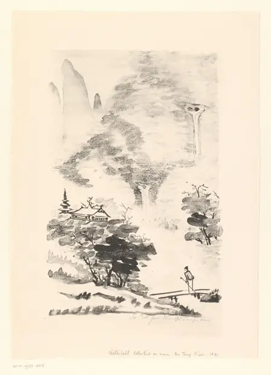

Waterval
访问原网页 ↗Visit original website ↗

S154 · Rijksmuseum，Amsterdam · 1931；赠入1973
馆藏纸本石版画。作者记作 K’uei Teng，年代1931，尺寸高×宽399 × 289毫米。1973年由 C. Zigrosser 赠入。纸缘有英文旧题 Waterfall。The Rijksmuseum attributes this lithograph to K’uei Teng, dates it to 1931 and measures it at 399 × 289 mm (height × width). C. Zigrosser gave it in 1973. A lower-margin inscription reads Waterfall.
馆藏图像与原文Archived images and documents

来源页摘录Source-page excerpt
Waterval - Rijksmuseum
K'uei Teng (vermeld op object), 1931
原始网址Original URL
https://www.rijksmuseum.nl/nl/collectie/object/Waterval--9134a0644c8344c3cb924a729bea4f6b